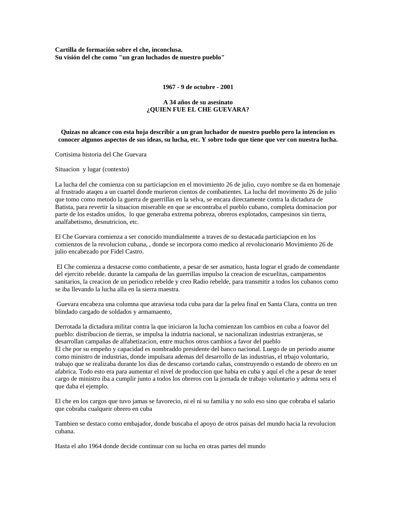

Primera hoja de su visión del che.doc. Clic en la imagen para abrir o descargar el archivo original.·22.5 KB·2 hojas, la imagen muestra la primera

Cartilla de formación sobre el che, inconclusa.
Su visión del che como "un gran luchados de nuestro pueblo"
1967 - 9 de octubre - 2001
A 34 años de su asesinato
Quizas no alcance con esta hoja describir a un gran luchador de nuestro pueblo pero la intencion es conocer algunos aspectos de sus ideas, su lucha, etc. Y sobre todo que tiene que ver con nuestra lucha.
Cortisima historia del Che Guevara
Situacion y lugar (contexto)
La lucha del che comienza con su particiapcion en el movimiento 26 de julio, cuyo nombre se da en homenaje al frustrado ataqeu a un cuartel donde murieron cientos de combatientes. La lucha del movimento 26 de julio que tomo como metodo la guerra de guerrillas en la selva, se encara directamente contra la dictadura de Batista, para revertir la situacion miserable en que se encontraba el pueblo cubano, completa dominacion por parte de los estados unidos, lo que generaba extrema pobreza, obreros explotados, campesinos sin tierra, analfabetismo, desnutricion, etc.
El Che Guevara comienza a ser conocido mundialmente a traves de su destacada particiapcion en los comienzos de la revolucion cubana, , donde se incorpora como medico al revolucionario Movimiento 26 de julio encabezado por Fidel Castro.
El Che comienza a destacrse como combatiente, a pesar de ser asmatico, hasta lograr el grado de comendante del ejercito rebelde. durante la campaña de las guerrillas impulso la creacion de escuelitas, campamentos sanitarios, la creacion de un periodico rebelde y creo Radio rebelde, para transmitir a todos los cubanos como se iba llevando la lucha alla en la sierra maestra.
Guevara encabeza una columna que atraviesa toda cuba para dar la pelea final en Santa Clara, contra un tren blindado cargado de soldados y armamaento,
Derrotada la dictadura militar contra la que iniciaron la lucha comienzan los cambios en cuba a foavor del pueblo: distribucion de tierras, se impulsa la indutria nacional, se nacionalizan industrias extranjeras, se desarrollan campañas de alfabetizacion, entre muchos otros cambios a favor del pueblo
El che por su empeño y capacidad es nombraddo presidente del banco nacional. Luego de un periodo asume como ministro de industrias, donde impulsara ademas del desarrollo de las industrias, el trbajo voluntario, trabajo que se realizaba durante los dias de descanso cortando cañas, construyendo o estando de obrero en un afabrica. Todo esto era para aumentar el nivel de produccion que habia en cuba y aquí el che a pesar de tener cargo de ministro iba a cumplir junto a todos los obreros con la jornada de trabajo voluntario y adema sera el que daba el ejemplo.
El che en los cargos que tuvo jamas se favorecio, ni el ni su familia y no solo eso sino que cobraba el salario que cobraba cualqueir obrero en cuba
Tambien se destaco como embajador, donde buscaba el apoyo de otros paisas del mundo hacia la revolucion cubana.
Hasta el año 1964 donde decide continuar con su lucha en otras partes del mundo
En el 1965 aproximadamente se va apelear al congo (africa) donde la campaña fracasa, al ser un movimiento no muy fuerte
Desde el año 1965 hasta el 1967 el che desaparece de la escena mundial para reaparecer en el corazon de america latina, en Bolivia donde es asesinado luego de largos meses de lucha contra el ejercito de bolivia apoyado por la CIA y obviamente por el gobierno de estados unidos
Transcripción del documento original su visión del che.doc. Se conserva la ortografía del original.